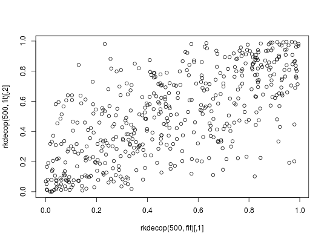

Bivariate kernel copula density estimation
Based on samples from a bivariate copula, the copula density is estimated. The user can choose between different methods. If no bandwidth is provided by the user, it will be set by a method-specific automatic selection procedure. The related (d/p/r)kdecop functions evaluate the density and cdf or simulate synthetic data, respectively.
kdecop(udata, bw = NA, mult = 1, method = "TLL2nn", knots = 30, renorm.iter = 3L, info = TRUE)
Arguments
| udata |
|
|---|---|
| bw | bandwidth specification; if |
| mult | bandwidth multiplier, has to be positive; useful for making estimates more/less smooth manually. |
| method |
|
| knots | integer; number of knots in each dimension for the spline approximation. |
| renorm.iter | integer; number of iterations for the renormalization procedure (see Details). |
| info | logical; if |
Value
The function kdecop returns an
object of class kdecopula that contains all information necessary for
evaluation of the estimator. If no bandwidth was provided in the function
call, the automatically selected value can be found in the variable
object$bw. If info=TRUE, also the following will be available
under object$info:
Estimator evaluated in sample points
Log likelihood
Effective number of parameters
Akaike information criterion
Bias-corrected version of Akaike information criterion
Bayesian information criterion.
Details
We use a Gaussian product kernel function for all methods
except the beta kernel and Bernstein estimators. For details on bandwidth
selection for a specific method, see: bw_t,
bw_tll, bw_tll_nn, bw_tt_pi,
bw_tt_cv, bw_mr, bw_beta,
bw_bern.
Kernel estimates are usually no proper copula densities. In particular, the
estimated marginal densities are not uniform. We mitigate this issue by
a renormalization procedure. The number of iterations of the
renormalization algorithm can be specified with the renorm.iter
argument. Typically, a very small number of iterations is sufficient.
Note
The implementation of the tapered transformation estimator ("TTPI"/"TTCV") was kindly provided by Kuangyu Wen.
References
Geenens, G., Charpentier, A., and Paindaveine, D. (2017). Probit transformation for nonparametric kernel estimation of the copula density. Bernoulli, 23(3), 1848-1873. Wen, K. and Wu, X. (2015). Transformation-Kernel Estimation of the Copula Density, Working paper, http://agecon2.tamu.edu/people/faculty/wu-ximing/agecon2/public/copula.pdf Gijbels, I. and Mielniczuk, J. (1990). Estimating the density of a copula function. Communications in Statistics - Theory and Methods, 19(2):445-464. Charpentier, A., Fermanian, J.-D., and Scaillet, O. (2006). The estimation of copulas: Theory and practice. In Rank, J., editor, Copulas: From theory to application in finance. Risk Books. Weiss, G. and Scheffer, M. (2012). Smooth Nonparametric Bernstein Vine Copulas. arXiv:1210.2043 Nagler, T. (2014). Kernel Methods for Vine Copula Estimation. Master's Thesis, Technische Universitaet Muenchen, https://mediatum.ub.tum.de/node?id=1231221
See also
kdecopula,
plot.kdecopula,
predict.kdecopula,
fitted.kdecopula,
simulate.kdecopula,
dkdecop,
pkdecop,
rkdecop
Examples
## load data and transform with empirical cdf data(wdbc) udat <- apply(wdbc[, -1], 2, function(x) rank(x) / (length(x) + 1)) ## estimation of copula density of variables 5 and 6 fit <- kdecop(udat[, 5:6]) summary(fit)#> Kernel copula density estimate (tau = 0.49) #> ------------------------------ #> Variables: mean smoothness -- mean compactness #> Observations: 569 #> Method: Transformation local likelihood, log-quadratic (nearest-neighbor, 'TLL2nn') #> Bandwidth: alpha = 0.5689854 #> B = matrix(c(0.71, 0.71, -0.71, 0.71), 2, 2) #> --- #> logLik: 190.97 AIC: -357 cAIC: -356.4 BIC: -302.85 #> Effective number of parameters: 12.47plot(fit)contour(fit)#> [1] 1.28916#> [1] 0.09779868